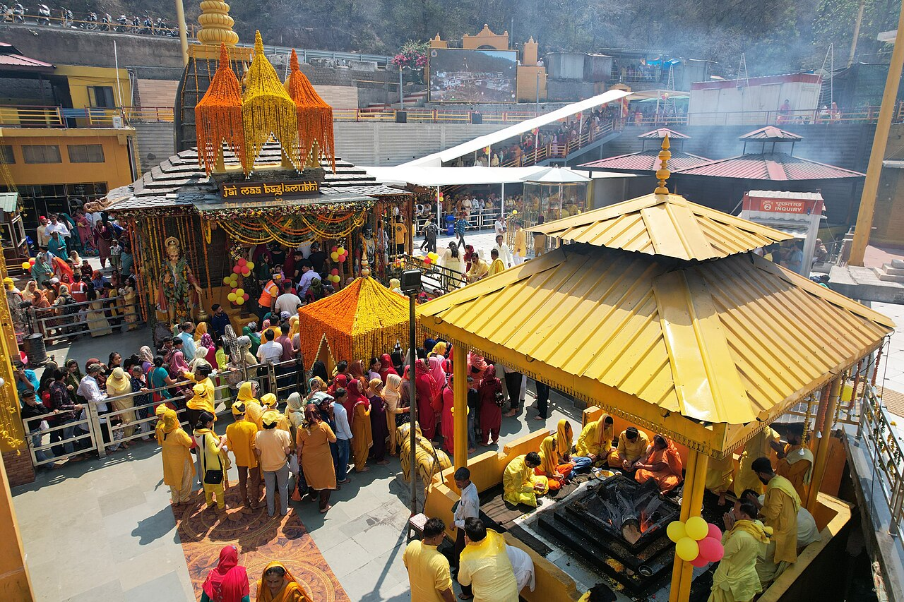

The main temples dedicated to Bagalamukhi or Bagala Devi are located at Bankhandi, Kangra, Himachal Pradesh; Shree Pitambara Peeth, Datia, Madhya Pradesh; Shri Bagalamukhee Shakthi Peetham, Shivampet, Narsapur, Telangana; Bagalamukhi (Bandlamma) in Chandole, Guntur district, Andhra Pradesh; Bugiladhar, Ghuttu, Uttarakhand; Kamakhya Temple, Guwahati, Assam; the Baglamukhi temple of Lalitpur, Nepal, Maa Baglamukhi Dham Ludhiana and the Nalkheda Siddhapitham Temple, Nalkheda, Madhya Pradesh.
Another interpretation translates her name as "Kalyani". In Kubjika Tantra there is a reference to yet another interpretation of the meaning of the name ‘Bagala’. In the initial chapter of the text, there is a verse – ‘Bakare Baruni Devi Gakare Siddhida Smrita.
Maa Baglamukhi Mandir

निंबू-मिर्ची हवन
Benefits of निंबू-मिर्ची हवन सेवा
नकारात्मकता से रक्षा
यह नकारात्मक ऊर्जा और हानिकारक प्रभावों से सुरक्षा प्रदान करने में मदद करता है। इससे घर में सकारात्मक और सुरक्षित माहौल बनता है।
मानसिक शांति एवं सुरक्षा
यह मानसिक तनाव और बेचैनी को कम करने में मदद करता है और मानसिक शांति का अहसास कराता है। इससे मन में स्थिरता, सकारात्मकता और सुरक्षा की भावना आती है।
वैवाहिक संबंधों में सुधार
यह शादीशुदा ज़िंदगी में गलतफहमियों और मतभेदों को कम करने में मदद करता है। यह पति-पत्नी के बीच प्यार, भरोसा और तालमेल बढ़ाने में सहायक होता है।
कार्य में सफलता एवं प्रगति
काम में आने वाली बाधाओं को दूर करने से सकारात्मक ऊर्जा पैदा होती है, जो सफलता और प्रगति की ओर ले जाती है। इससे बिज़नेस और करियर में नए अवसर पैदा करने में मदद मिलती है।
Hawan Booking Steps
संपर्क करें
अपनी पूजा एवं होम-हवन के लिए हमसे WhatsApp या फोन द्वारा संपर्क करें।
पूजा संकल्प और जानकारी
अपना नाम, गोत्र और पूजा का उद्देश्य साझा करें। त्यानुसार आपका संकल्प लिया जाएगा।
वैदिक विधि से हवन एवं पूजा
अनुभवी पंडितजींकडून शास्त्रोक्त एवं वैदिक विधि से निंबू-मिर्ची होम-हवन एवं पूजा संपन्न की जाएगी।
पूजा वीडियो आपको भेजा जाएगा
पूजा पूर्ण होने के बाद पूजा का वीडियो आपके दिए गए WhatsApp नंबर पर भेजा जाएगा। आप इसे My Bookings में भी देख और डाउनलोड कर सकते हैं।
Hawan FAQ
नींबू-मिर्च का *होम-हवन* कौन करेगा?
हम आपकी आस्था का पूरा सम्मान करते हैं। नींबू-मिर्च का *होम-हवन* अनुभवी *पंडितों* या *आचार्यों* की देखरेख में किया जाता है, जो शास्त्रों में बताए गए रीति-रिवाजों के जानकार होते हैं। मंत्रों का जाप, *हवन* और अन्य धार्मिक अनुष्ठान आपकी खास इच्छाओं (*संकल्प*) के अनुसार पूरी सावधानी और विधि-विधान से किए जाते हैं। यह अनुष्ठान आपके परिवार में खुशी, शांति और सकारात्मकता लाने के लिए पूरी श्रद्धा के साथ किया जाता है।
अगर मैं शारीरिक रूप से वहाँ मौजूद न रहूँ, तो *नींबू-मिर्ची* वाला *होम-हवन* कैसे होगा?
आपका नाम, *गोत्र* और *होम-हवन* का मकसद (*संकल्प*) नोट किया जाता है। पूजा शुरू होने पर, *पंडित जी* आपके नाम से *संकल्प* लेते हैं और फिर शास्त्रों के नियमों के अनुसार पूरा *होम-हवन* किया जाता है। भले ही आप शारीरिक रूप से वहाँ मौजूद न हों, लेकिन चूँकि यह पूजा आपके नाम से लिए गए *संकल्प* के साथ की जाती है, इसलिए आप अपनी आस्था के ज़रिए इस पूजा में शामिल हो सकते हैं।
मुझे कैसे पता चलेगा कि मेरे नाम से *नींबू-मिर्च* *होम-हवन* किया गया है?
1. संकल्प: पूजा शुरू होने पर, पंडित जी आपके *संकल्प* (पक्का इरादा/नियत) के अनुसार *होम-हवन* शुरू करने के लिए आपका नाम और *गोत्र* बोलते हैं।
2. व्हिडिओ पुष्टी: *होम-हवन* पूरा होने के बाद, पूजा का वीडियो आपके दिए गए WhatsApp नंबर पर भेजा जाएगा। इसके अलावा, आप "My Bookings" सेक्शन में जाकर अपने *होम-हवन* की जानकारी और वीडियो देख और डाउनलोड कर सकते हैं।
अगर मुझे अपना गोत्र नहीं पता है, तो मुझे क्या करना चाहिए?
अगर आपको अपना गोत्र नहीं पता है, तो चिंता करने की कोई बात नहीं है। कृपया बुकिंग के समय पंडित जी को इस बारे में बता दें। आपको धार्मिक परंपराओं के अनुसार मार्गदर्शन दिया जाएगा और उसी के मुताबिक *संकल्प* (धार्मिक प्रतिज्ञा) की प्रक्रिया पूरी की जाएगी। पंडित जी आपकी खास स्थिति के आधार पर आपको सही प्रक्रिया के बारे में सलाह देंगे।
नींबू-मिर्च होम-हवन के बाद मुझे क्या मिलेगा?
होम-हवन पूरा होने पर, आपके नाम का एक सर्टिफ़िकेट जारी किया जाएगा। अगर होम-हवन में परिवार के सदस्यों को भी शामिल करने के लिए बुकिंग की गई है, तो उनके नाम भी सर्टिफ़िकेट पर लिखे जा सकते हैं।
इसके अलावा, होम-हवन का वीडियो आपके WhatsApp नंबर पर भेजा जाएगा, और इसे 'पुण्यम ऐप' (Punyam App) के "My Bookings" सेक्शन से भी देखा और डाउनलोड किया जा सकेगा।
मुझे पूजा का वीडियो कब मिलेगा?
नींबू-मिर्च होम-हवन की रस्म पूरी होने के बाद, इस समारोह का एक वीडियो तैयार किया जाएगा और आपकी बुकिंग में दिए गए WhatsApp नंबर पर भेजा जाएगा। इसके अलावा, वीडियो उपलब्ध होने पर इसे 'पुण्यम ऐप' (Punyam App) के 'माई बुकिंग्स' (My Bookings) सेक्शन से देखा और डाउनलोड किया जा सकेगा।
अगर मुझे अपने लेमन-चिली होमा-हवन में कोई समस्या आती है, तो मुझे किससे संपर्क करना चाहिए?
अपनी बुकिंग, *संकल्प*, वीडियो, सर्टिफ़िकेट या होमा-हवन से जुड़ी किसी भी समस्या के लिए कृपया हमारी कस्टमर सपोर्ट टीम से संपर्क करें। हमारी टीम आपकी बुकिंग की जानकारी वेरिफ़ाई करेगी और ज़रूरी गाइडेंस देगी।